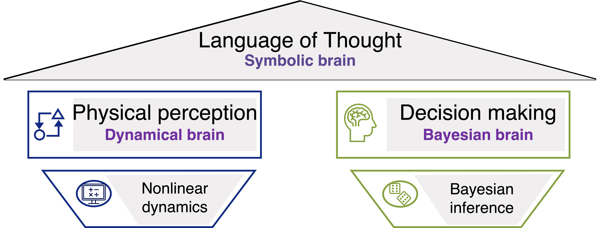
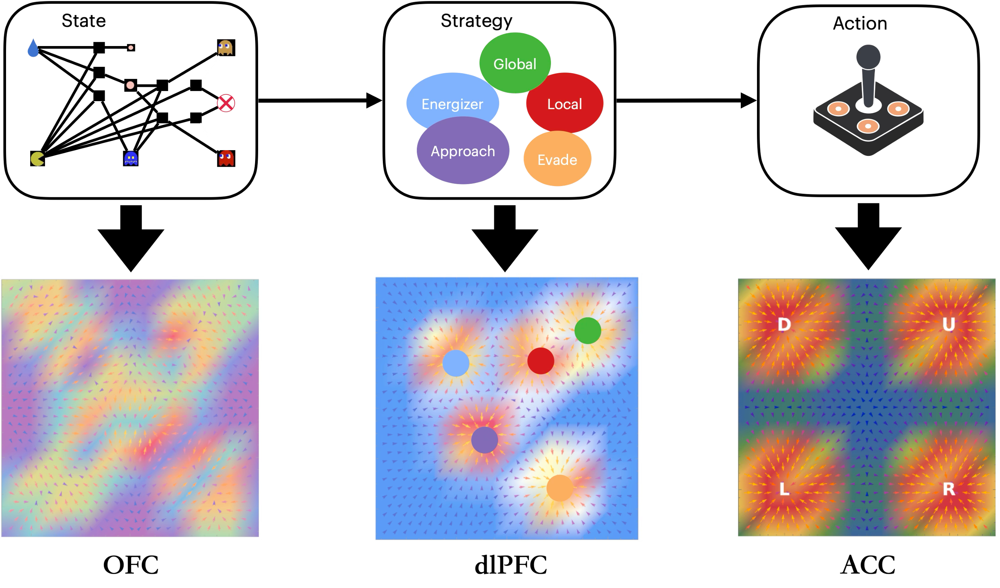
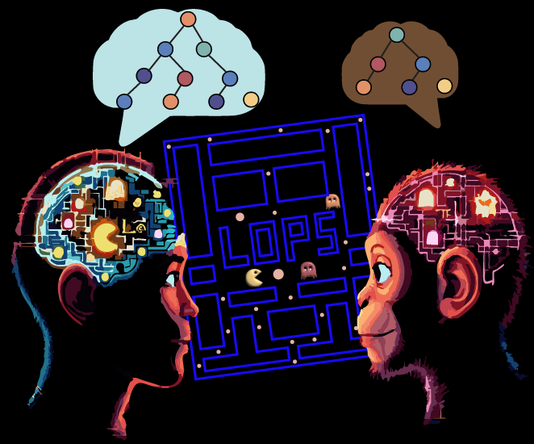

Research Overview

Understanding the brain’s algorithm for general intelligence requires a unified framework that integrates physical perception, decision-making, and symbolic reasoning. At LoT Lab, we develop theoretical frameworks grounded in mathematical tools such as probabilistic graphical models and nonlinear dynamical systems, aiming to uncover how the brain constructs internal models and utilizes them for cognitive processing.
1. Dynamical Brain for approximate Physical Perception

Understanding and interacting with a dynamic physical world is a hallmark of intelligence. But how does the brain construct a physical engine that mirrors the ground truth dynamics of the physical world? We investigate how enriched neural dynamics encode a wealth of information about the underlying principles of the physical world, governed by diverse equations—from Newtonian mechanics to Maxwell’s equations, and even quantum mechanics. By combining high-resolution neural data with adaptive task designs, we aim to uncover how neural activity reflects these physical laws and how the brain builds internal models to enable prediction, mental simulation, and efficient perception.
2. Bayesian Brain for Creative Problem Solving

Our brain can solve diverse problems in remarkably creative ways—ranging from math quizzes, puzzles, and brain teasers to strategic games and complex real-world social interactions. While modern AI leverages reinforcement learning combined with black-box deep learning tools for their power as universal function approximators, the brain approaches such problems with remarkable efficiency, flexibility, and creativity—even under strict resource constraints. We investigate how the brain approximates Bayesian inference in dynamic, multi-agent, and partially observable environments. Unlike static probabilistic models, real-world decision-making requires navigating interacting sources of uncertainty—from environmental dynamics and reward structures to policies and the intentions of others. Through the development of behavioral paradigms and computational models, we aim to reverse-engineer the brain’s structured and approximate inference algorithms, shedding light on its mechanisms for creative problem-solving.
3. Symbolic Brain as Language of Thought

Inevitably, our brain must transform continuous variables—such as perceived physical quantities (e.g., velocity, force), beliefs about latent variables, and actions—into symbolic concepts, languages, and structured representations that support higher-level reasoning and abstraction. To investigate this, we develop cognitive tasks with varying logical structures and degrees of uncertainty, designed for humans, animals, and AI systems alike. These experiments reveal how the brain constructs and manipulates symbolic mental programs to solve diverse problems. We build theoretical frameworks that integrate symbolic reasoning with Bayesian inference and physical dynamics, modeling how knowledge is abstracted, transferred, and generalized across domains.